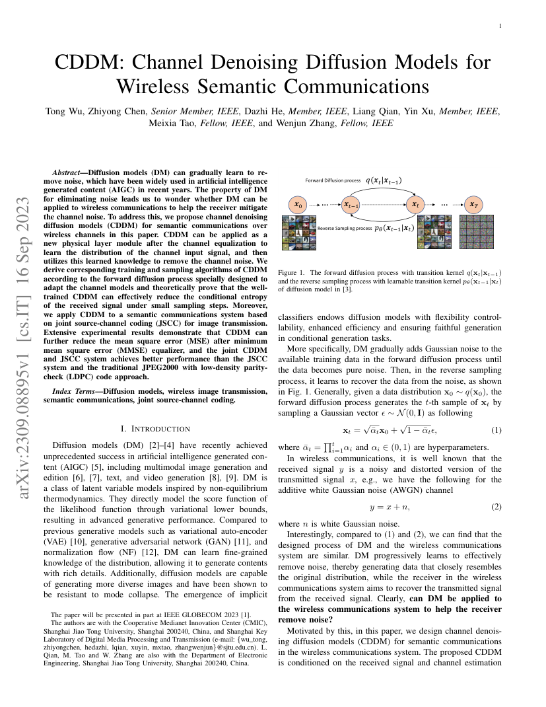
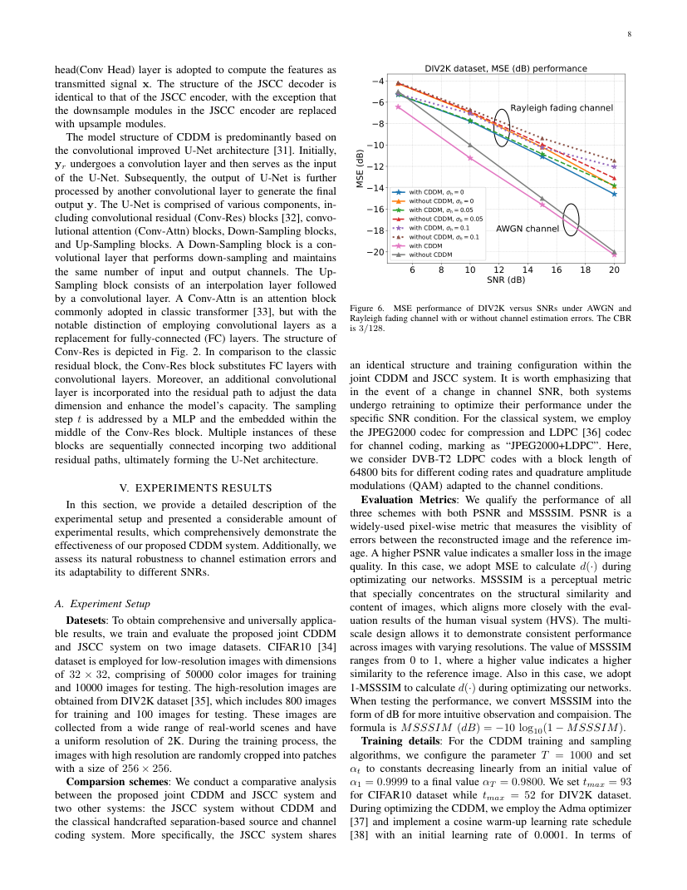

现有进展：在此之前，相关研究已确立，现有深度学习支持的语义通信系统通常依赖于发送端和接收端之间的共享背景知识，包括经验数据及其相关的语义信息。 PDF p.1PDF p.2
仍然存在的问题：为单一带宽或信道条件训练的语义编码器具有固定表示，且在工作点变化时无法重新分配速率和保护。 PDF p.1PDF p.2PDF p.3
为什么已有方法解决不了：为单一带宽、信噪比或信道分布训练的模型具有固定的瓶颈和保护模式。当操作条件发生变化时，使用相同表示法进行重复推断无法为变得脆弱的信息重新分配速率或冗余。更具体地说，已有链路缺少了本文随后引入的论文特有机制：该系统由两个主要部分组成，即语义编码（SC）网络和数据适配（DA）网络。 PDF p.1PDF p.2PDF p.3
为什么这个问题值得研究：问题之所以重要，是因为有限的信道使用迫使系统选择保护哪些视觉信息。感知或域关键结构可能比平均像素保真度更有价值，尤其是在低信噪比或高压缩率下。 PDF p.1PDF p.2
本文怎样顺着问题提出方案：因此，本文开发了具有任务无知发射端和动态数据的深度学习赋能语义通信系统。其具体设计总结如下：为解决这些实际问题，本文提出了一种基于神经网络的图像传输语义通信系统，其中任务在发射端无意识，数据环境是动态的。 PDF p.1PDF p.2
方案为什么有可能起作用：因果联系在于，系统由两个主要部分组成，即语义编码（SC）网络和数据适配（DA）网络。表示或保护模式可以随着操作条件变化而变化，而非训练后保持固定。 PDF p.1PDF p.2
作者希望证明什么：论文测试了这种因果机制是否经得起公平的通信比较。据报道的证据是：基于JPEG2000的方法是先传输图像轮廓，然后逐步传输数据，以不断提升图像质量。 PDF p.6PDF p.9PDF p.11
系统怎么工作
该系统是图像传输或生成的端到端通信链路。为解决这些实际问题，本文提出了一种基于神经网络的图像传输语义通信系统，其中任务在发射端无意识，数据环境是动态的。该系统由两个主要部分组成，即语义编码（SC）网络和数据适配（DA）网络。关键在于学习到的表征如何与所说的信道和资源约束相连接，而不仅仅是使用更大的神经网络。 PDF p.1PDF p.2
输入：源是输入图像。 PDF p.1PDF p.2
发送端：发送方应用论文的语义/信源信道编码器：该系统由两个主要部分组成，即语义编码（SC）网络和数据适配（DA）网络。 PDF p.1PDF p.2
实际发送：传输对象是一个语义特征或潜在表示，其精确的位映射尚未完全指定。 PDF p.1PDF p.2
信道：传输遵循论文中评估的信道/资源模型;其处理方式总结为：信道接口报告不足或由传统链路抽象承担。 PDF p.4PDF p.5PDF p.9
接收端：接收方从被论文接收方假设的恢复语义特征开始，应用所提出的译码器、推理模型或生成器。 PDF p.1PDF p.2
现有进展：在此之前，相关研究已证明，最近，一种基于代码本的语义通信框架已展示出优于传统语义通信系统的性能提升。 PDF p.1
仍然存在的问题：许多已学习的语义链止于连续的潜在状态，导致量化、有限符号映射以及位/索引错误的后果超出学习设计范围。 PDF p.1PDF p.6
为什么已有方法解决不了：连续潜在链路或单独设计的常规链路并未规定语义信息如何量化、映射为有限符号，以及在位或索引错误时如何保护。仅仅通过改进源自编码器，无法弥合这一接口空白。更具体地说，已有链路缺乏本文随后引入的论文专用机制：首先，我们提出了一种语义感知码本构建方法，基于一种新颖的距离度量，统一了码字编码器和基于神经网络的语义编码器的目标。 PDF p.1PDF p.6
为什么这个问题值得研究：问题之所以重要，是因为有限的信道使用迫使系统选择保护哪些视觉信息。感知或域关键结构可能比平均像素保真度更有价值，尤其是在低信噪比或高压缩率下。 PDF p.1
本文怎样顺着问题提出方案：因此，本文发展了基于Wyner-Ziv编码的语义通信方法，并结合共享语义码本。其具体设计总结如下：首先，我们提出一种语义感知码本构建方法，基于一种新颖的距离度量，统一码字编码器和基于 NN 的语义编码器的目标。 PDF p.1
方案为什么有可能起作用：其因果联系在于，首先，我们提出了一种基于新颖距离度量的语义感知码本构建方法，统一了码字编码器和基于神经网络的语义编码器的目标。学习的潜在部分被强制通过所描述的离散或混合接口，因此接收端设计时是为它实际将观察到的表征而设计的。 PDF p.1
作者希望证明什么：论文测试了这种因果机制是否经得起公平的通信比较。报告的证据是：数值结果表明，我们的方法在语义信息恢复和数据信息恢复方面，比传统和代码本辅助语义编码方法更优。 PDF p.5PDF p.6
系统怎么工作
该系统是图像传输或生成的端到端通信链路。首先，我们提出了一种语义感知码本构建方法，基于一种新颖的距离度量，统一码字编码器和基于 NN 的语义编码器的目标。关键在于学习到的表征如何与所说的信道和资源约束相连接，而不仅仅是使用更大的神经网络。 PDF p.1
输入：源是输入图像。 PDF p.1
发送端：发送方应用论文中的语义/信源信道编码器：首先，我们提出了一种语义感知码本构建方法，基于一种新颖的距离度量，统一了码字编码器和基于神经网络的语义编码器的目标。 PDF p.1
实际发送：传输对象是量化比特、离散令牌或码本 index，而非无约束连续潜在对象。 PDF p.1
信道：传输遵循论文中评估的信道/资源模型;其处理方式总结为离散变量经数字链路传输;需检查残余位/索引错误。 PDF p.2
接收端：接收端从解码后的比特/索引或其噪声/软估计开始，随后进行语义去量化和重建，应用所提出的解码器、推理模型或生成器。 PDF p.1
现有进展：在此之前，相关研究领域已确立语义通信基于共享背景知识实现，但共享机制存在隐私泄露风险。 PDF p.1
仍然存在的问题：攻击者很难从被窃听消息中重建原始语义信息。 PDF p.1PDF p.3
为什么已有方法解决不了：早期以可靠性为导向的语义编码器优化了合法接收端，并未模拟窃听者、攻击者或好奇的服务器能从传输的表示中推断出的内容。因此，仅靠更好的重建无法消除语义泄露或操作风险。更具体地说，早期的流程缺少本文随后引入的论文特有机制：在论文中，我们提出了一种加密语义通信系统（ESCS）用于隐私保护，结合了普遍性和机密性。 PDF p.1PDF p.3
为什么这个问题值得研究：这个问题很重要，因为语义质量必须在信道使用、功耗和延迟等真实预算下实现;否则，表面上的机器学习增益可能无法转化为通信系统的增益。 PDF p.1
本文怎样顺着问题提出方案：因此，论文提出了利用对抗性训练进行隐私保护的加密语义通信。其具体设计总结如下：在论文中，我们提出了一种加密语义通信系统（ESCS）用于隐私保护，结合了普遍性和机密性。 PDF p.1
方案为什么有可能起作用：因果联系在于，在论文中，我们提出了一种加密语义通信系统（ESCS）用于隐私保护，结合了普遍性和机密性。威胁或隐私变量现在进入了训练或优化，同时涉及合法-接收者质量。 PDF p.1
作者希望证明什么：论文测试了这种因果机制是否经得起公平的通信比较。报告的证据是：实验结果表明，采用对抗加密训练方案的拟议ESCS无论语义信息是否加密，都能表现出色。 PDF p.2PDF p.3PDF p.5
系统怎么工作
该系统是通用语义通信系统的端到端通信链路。在论文中，我们提出了一种加密语义通信系统（ESCS）用于隐私保护，结合了普遍性和机密性。关键在于学习到的表征如何与所说的信道和资源约束相连接，而不仅仅是使用更大的神经网络。 PDF p.1
输入：源是源数据和通信任务。 PDF p.1
发送端：发送者应用论文的语义/信源信道编码器：在论文中，我们提出了一种加密语义通信系统（ESCS）用于隐私保护，结合了普遍性和机密性。 PDF p.1
实际发送：传输对象是一个语义特征或潜在表示，其精确的位映射尚未完全指定。 PDF p.1
信道：传输遵循论文中评估的信道/资源模型;其处理方式总结为：信道接口报告不足或由传统链路抽象承担。 PDF p.2
接收端：接收方从被论文接收方假设的恢复语义特征开始，应用所提出的译码器、推理模型或生成器。 PDF p.1
现有进展：在此之前，相关研究已确立：我们考虑一个时间变化衰落的高斯MIMO信道中的图像语义通信系统，信道状态有限。 PDF p.2
仍然存在的问题：大多数语义编解码器设计为点对点链路，不利用跨用户语义关联，也不共同处理异构信道、干扰和用户公平性。 PDF p.1PDF p.2PDF p.12
为什么已有方法解决不了：为每个用户独立运行点对点语义编解码器，会忽略共享内容、异构信道、干扰和公平性。因此，一旦用户共享同一媒介，单用户最优方案不必是可行或频谱高效的。更具体地说，已有链路缺乏本文随后引入的论文特有机制：具体来说，我们利用神经网络（NN）共同优化该方案中的分层图像压缩和叠加码映射。 PDF p.1PDF p.2PDF p.12
为什么这个问题值得研究：问题之所以重要，是因为有限的信道使用迫使系统选择保护哪些视觉信息。感知或域关键结构可能比平均像素保真度更有价值，尤其是在低信噪比或高压缩率下。 PDF p.2
本文怎样顺着问题提出方案：因此，本文开发了一种基于深度学习的图像语义广播方法，用于衰落信道上的图像语义通信。其具体设计总结如下：论文开发了标题所述的方法：基于深度学习的广播方法，用于通过衰落信道进行图像语义通信。 PDF p.2
方案为什么有可能起作用：其因果联系在于，具体来说，我们利用神经网络（NN）共同优化该方案中的层级图像压缩和叠加码映射。跨用户相关性和异构链接现在形成了联合传输的表示，而非重复的独立消息。 PDF p.1PDF p.2
作者希望证明什么：论文测试了这种因果机制是否经得起公平的通信比较。报告的证据是：模拟结果表明我们提出的方案能够动态调整编码以适应当前信道状态，并且在固定编码块下优于一些现有智能方案。 PDF p.6PDF p.7PDF p.9
系统怎么工作
该系统是图像传输或生成的端到端通信链路。论文发展了标题所描述的方法：基于深度学习的广播方法，用于衰落信道上的图像语义通信。具体来说，我们利用神经网络（NN）共同优化该方案中的分层图像压缩和叠加码映射。关键在于学习到的表征如何与所说的信道和资源约束相连接，而不仅仅是使用更大的神经网络。 PDF p.1PDF p.2
输入：源是输入图像。 PDF p.1PDF p.2
发送端：发送方应用论文的语义/信源信道编码器：具体来说，我们利用神经网络（NN）共同优化该方案中的分层图像压缩和叠加码映射。 PDF p.1PDF p.2
实际发送：传输对象是量化比特、离散令牌或码本 index，而非无约束连续潜在对象。 PDF p.1PDF p.2
信道：传输遵循论文中评估的信道/资源模型;其处理方式总结为离散变量经数字链路传输;需检查残余位/索引错误。 PDF p.3PDF p.7PDF p.11
接收端：接收端从解码后的比特/索引或其噪声/软估计开始，随后进行语义去量化和重建，应用所提出的解码器、推理模型或生成器。 PDF p.1PDF p.2
发送端发送量化比特、离散令牌或码本 index，而非无约束的连续潜在信号。这被归类为：显式数字语义表示：bit、离散 token 或码本 index。这一区别很重要，因为连续的神经符号、硬编码本 index和信道解码的bitstream以不同方式失效。 PDF p.1PDF p.2PDF p.3
通信成本通过论文声明的信道使用、压缩/带宽比、比特率、码率、令牌数量或分配的无线资源来解读。当论文未报告完整的比特级接口时，报告并未仅凭潜在维度发明比特率。 PDF p.1PDF p.2PDF p.3
信道怎样作用，接收端实际拿到什么
信道处理类别：离散变量经数字链路传输；需检查残余 bit/index error
在拟议的传输路径中，信道处理方式如下：离散变量经数字链路传输;需检查残余位/索引误差。仅作为比较基线提及的LDPC、QAM或其他传统方案不用于分类拟议接收机。 PDF p.3PDF p.7PDF p.11
接收端实际上是从解码后的比特/索引或其噪声/软估计开始，随后进行语义量化和重建。然后它会重建或生成的图像。该陈述明确了学习到的译码器看到的是噪声连续符号、错误的离散变量、软信息，还是已经信道解码的表示。 PDF p.3PDF p.7PDF p.11
实验设置与主要结论
数据集：论文未在结构化字段中明确列出
Baseline：JPEG、LDPC、WITT、SwinJSCC、separation-based
指标：PSNR、latency
信道：fading channel、MIMO、QAM、broadcast channel
实验使用论文中所述的源/任务数据集;与基于分离的JPEG、LDPC、WITT、SwinJSCC进行比较;用PSNR评估，延迟;并使用衰落信道、MIMO、QAM、广播信道。一个代表性的报告工作条件是：必须同时读取精确的信噪比、带宽比和功耗约束，并附带相应的结果数据。 PDF p.3PDF p.7PDF p.11
模拟结果表明，我们提出的方案可以动态地将编码调整到当前信道状态，并且在固定编码块下优于一些现有的智能方案。 PDF p.6PDF p.7PDF p.9
现有进展：在此之前，相关研究已证明扩散模型（DM）可以逐步学习去除噪声，近年来这些技术已被广泛应用于人工智能生成内容（AIGC）。 PDF p.1PDF p.2
仍然存在的问题：即使接收端有强生成先验，重构链路仍传输大量源细节，而现有生成方案无法完全控制延迟、幻觉和信道条件保真度。 PDF p.1PDF p.2PDF p.11
为什么已有方法解决不了：传统的重建导向传输使用描述信息，强接收机可以综合这些信息。它也缺乏判断何种紧凑条件足够，以及如何将生成错误与延迟和保真度进行权衡的机制。更具体地说，早期的流程缺乏本文随后引入的专门论文机制：扩散模型（DM）可以逐渐学习去除噪声，而这些杂音近年来已被广泛应用于人工智能生成内容（AIGC）。 PDF p.1PDF p.2PDF p.11
为什么这个问题值得研究：问题之所以重要，是因为有限的信道使用迫使系统选择保护哪些视觉信息。感知或域关键结构可能比平均像素保真度更有价值，尤其是在低信噪比或高压缩率下。 PDF p.1PDF p.2
本文怎样顺着问题提出方案：因此，本文发展了CDDM：无线语义通信的信道去噪扩散模型。其具体设计总结如下：为解决这个问题，本文提出了用于无线信道语义通信的信道去噪扩散模型（CDDM）。 PDF p.1PDF p.2
方案为什么有可能起作用：其因果关系在于扩散模型（DM）可以逐渐学会去除噪声，近年来这些噪音已被广泛应用于人工智能生成内容（AIGC）。发射端发送紧凑状态，接收端提供可预测的细节，减少必须跨信道的信息量。 PDF p.1PDF p.2PDF p.7
作者希望证明什么：论文测试了这种因果机制是否经得起公平的通信比较。报告的证据是：大量实验结果表明，CDDM在最小均方误差（MMSE）均衡器后可以进一步降低均方误差（MSE），并且CDDM与JSCC联合系统在不同场景下的性能优于JSCC系统、传统的低密度奇偶校验（LDPC）码方法JPEG2000及其他基准测试。 PDF p.7PDF p.8PDF p.10
系统怎么工作
该系统是图像传输或生成的端到端通信链路。为此，本文提出了用于无线信道语义通信的信道去噪扩散模型（CDDM）。扩散模型（DM）可以逐步学习去除噪声，近年来在人工智能生成内容（AIGC）中被广泛应用。关键在于学习到的表征如何与所说的信道和资源约束相连接，而不仅仅是使用更大的神经网络。 PDF p.1PDF p.2PDF p.7
输入：源是输入图像。 PDF p.1PDF p.2PDF p.7
发送端：发送方应用论文的语义/信源信道编码器：扩散模型（DM）可以逐步学习去除噪声，近年来这些杂音已被广泛应用于人工智能生成内容（AIGC）。 PDF p.1PDF p.2PDF p.7
实际发送：传输对象是功率归一化的实数或复值神经信道符号。 PDF p.1PDF p.2PDF p.7
信道：传输遵循论文中评估的信道/资源模型;其处理方式总结为带噪连续 潜在/复信道符号端到端联合训练。 PDF p.1PDF p.2
接收端：接收端从可微信道或均衡器之后的噪声连续符号开始，应用所提出的解码器、推理模型或生成器。 PDF p.1PDF p.2PDF p.7
实验使用DIV2K;与JPEG2000、LDPC、Turbo、WITT和基于分离的比较;评估对象包括PSNR、LPIPS、mIoU;并使用AWGN、Rayleigh、衰落信道、QAM。一个代表性的报告工作条件是：必须同时读取精确的信噪比、带宽比和功耗约束，并附带相应的结果数据。 PDF p.1PDF p.2
大量实验结果表明，CDDM在最小均方误差（MMSE）均衡器后可以进一步降低均方误差（MSE），而CDDM和JSCC联合系统在不同场景下的性能优于JSCC系统、传统的低密度宇称校验（LDPC）码方法JPEG2000及其他基准测试。 PDF p.7PDF p.8PDF p.10
通信审稿价值与 Codex 判断
价值要由相同带宽、功率和信道条件下的质量、鲁棒性或时延收益来证明。
局限：生成先验可节省传输，但幻觉、域偏移、共享模型成本、推理时延和语义忠实度仍是核心风险。

CDDM: Channel Denoising Diffusion Models for Wireless Semantic Communications，原 PDF 第 1 页（架构/方法页）。

CDDM: Channel Denoising Diffusion Models for Wireless Semantic Communications，原 PDF 第 8 页（关键结果页）。
Deep Learning-Based Superposition Coded Modulation for Hierarchical Semantic Communications Over Broadcast Channels
2024 · IEEE Transactions on Communications · 多用户接入、广播或中继
现有进展：在这篇论文之前，相关工作领域已经确立了我们考虑通过广播信道进行多用户语义通信。 PDF p.1PDF p.2
仍然存在的问题：作为一种经典的降级广播信道容量实现方案[37]，叠加编码适用于独立数据流。 PDF p.1PDF p.2PDF p.4
为什么已有方法解决不了：为每个用户独立运行点对点语义编解码器，会忽略共享内容、异构信道、干扰和公平性。因此，一旦用户共享同一媒介，单用户最优方案不必是可行或频谱高效的。更具体地说，已有链路缺少本文随后引入的论文特有机制：最后，基本特征及其细化在概率调制后被叠加用于广播。 PDF p.1PDF p.2PDF p.4
为什么这个问题值得研究：问题之所以重要，是因为有限的信道使用迫使系统选择保护哪些视觉信息。感知或域关键结构可能比平均像素保真度更有价值，尤其是在低信噪比或高压缩率下。 PDF p.1PDF p.2
本文怎样顺着问题提出方案：因此，论文开发了基于深度学习的叠加编码调制，用于广播信道上的分层语义通信。其具体设计总结如下：受叠加编码能力实现特性的启发，我们提出了基于深度学习的叠加编码调制（DeepSCM）方案。 PDF p.1PDF p.2
方案为什么有可能起作用：因果联系在于，最终，基本特征及其细化在概率调制后被叠加用于广播。跨用户相关性和异构链接现在形成了联合传输的表示，而非重复的独立消息。 PDF p.1PDF p.2PDF p.3
作者希望证明什么：论文测试了这种因果机制是否经得起公平的通信比较。报告的证据是：DeepSCM在无叠加结构的基准编码调制方案以及经典的独立信源信道编码基线中表现优于，尤其是在信道差异大和高阶调制情况下。 PDF p.6PDF p.8PDF p.9
系统怎么工作
该系统是图像传输或生成的端到端通信链路。受叠加态编码能力实现特性的启发，我们提出了基于深度学习的叠加编码调制（DeepSCM）方案。最后，基本特征及其细化被叠加以配合概率调制后的广播。关键在于学习到的表征如何与所说的信道和资源约束相连接，而不仅仅是使用更大的神经网络。 PDF p.1PDF p.2PDF p.3
输入：源是输入图像。 PDF p.1PDF p.2PDF p.3
发送端：发送方应用论文的语义/信源信道编码器：最后，基本特征及其细化在概率调制后叠加以广播。 PDF p.1PDF p.2PDF p.3
实际发送：传输对象是功率归一化的实数或复值神经信道符号。 PDF p.1PDF p.2PDF p.3
信道：传输遵循论文中评估的信道/资源模型;其处理方式总结为带噪连续 潜在/复信道符号端到端联合训练。 PDF p.4
接收端：接收端从可微信道或均衡器之后的噪声连续符号开始，应用所提出的解码器、推理模型或生成器。 PDF p.1PDF p.2PDF p.3
实验中使用VQA;与DeepJSCC、BPG、JPEG2000、LDPC、BERT比较;用PSNR、SSIM、MS-SSIM等精度评估;并使用AWGN（衰落信道）、OFDM、QAM、PSK（广播信道）。一个代表性的报告工作条件是：必须同时读取精确的信噪比、带宽比和功耗约束，并附带相应的结果数据。 PDF p.4
DeepSCM在无叠加结构的基准编码调制方案以及经典的独立信源信道编码基线中表现优于，尤其是在信道差异大和高阶调制情况下。 PDF p.6PDF p.8PDF p.9
现有进展：在此之前，相关研究领域已确立语义通信作为一种新的传播范式，能够提取并传输与接收方任务相关的有意义信息。 PDF p.1
仍然存在的问题：许多已学习的语义链止于连续的潜在状态，导致量化、有限符号映射以及位/索引错误的后果超出学习设计范围。 PDF p.1PDF p.4PDF p.9
为什么已有方法解决不了：连续潜在链路或单独设计的常规链路并未规定语义信息如何量化、映射为有限符号，以及在位或索引错误时如何保护。仅仅通过改进源自编码器，无法弥合这一接口空白。更具体地说，已有链路缺少本文随后引入的论文特有机制：值得注意的是，采用了结构良好的码本将每个源图像映射为码字，码字随后提供共享的先验信息，以辅助通用神经网络架构的语义编码。 PDF p.1PDF p.4PDF p.9
为什么这个问题值得研究：问题之所以重要，是因为有限的信道使用迫使系统选择保护哪些视觉信息。感知或域关键结构可能比平均像素保真度更有价值，尤其是在低信噪比或高压缩率下。 PDF p.1
本文怎样顺着问题提出方案：因此，本文开发了《通过共享语义感知代码本提升基于学习的语义编码效率以实现图像传输》。其具体设计总结如下：首先，我们提出一种基于加权数据语义距离的通用语义感知码本构建方法。 PDF p.1
方案为什么有可能起作用：其因果联系在于，采用了结构良好的码本将每个源图像映射为码字，码字随后提供共享的先前信息，以辅助通用神经网络架构的语义编码。学习的潜在部分被强制通过所描述的离散或混合接口，因此接收端设计时是为它实际将观察到的表征而设计的。 PDF p.1
作者希望证明什么：论文测试了这种因果机制是否经得起公平的通信比较。据报道的证据是：为了在不同码本或不同信噪比下获得性能，只需利用基于一个码本或同一信噪比训练的语义编码神经网络作为预训练模型，然后对其进行微调以实现快速收敛。 PDF p.6PDF p.8PDF p.9
系统怎么工作
该系统是图像传输或生成的端到端通信链路。首先，我们提出一种基于加权数据语义距离的通用语义感知码本构建方法。值得注意的是，采用了结构良好的码本将每个源图像映射为码字，码字随后提供共享的先验信息，以辅助通用神经网络架构的语义编码。关键在于学习到的表征如何与所说的信道和资源约束相连接，而不仅仅是使用更大的神经网络。 PDF p.1
输入：源是输入图像。 PDF p.1
发送端：发送方应用论文的语义/信源信道编码器：值得注意的是，采用结构良好的码本将每个源图像映射为码字，码字随后提供共享的先验信息，以辅助通用神经网络架构的语义编码。 PDF p.1
实际发送：传输对象是量化比特、离散令牌或码本 index，而非无约束连续潜在对象。 PDF p.1
信道：传输遵循论文中评估的信道/资源模型;其处理方式总结为离散变量经数字链路传输;需检查残余位/索引错误。 PDF p.2PDF p.3PDF p.6
接收端：接收端从解码后的比特/索引或其噪声/软估计开始，随后进行语义去量化和重建，应用所提出的解码器、推理模型或生成器。 PDF p.1
实验中使用VQA;与基于分离的BPG、JPEG2000、LDPC、SwinJSCC进行比较;用PSNR、SSIM、MS-SSIM、LPIPS、BLEU、准确率、延迟、BER进行评估;并使用AWGN、Rayleigh、衰落信道、MIMO。一个代表性的报告工作条件是：必须同时读取精确的信噪比、带宽比和功耗约束，并附带相应的结果数据。 PDF p.2PDF p.3PDF p.6
为了在不同码本或不同信噪比下获得性能，只需将基于同一码本或同一信噪比训练的语义编码NN作为预训练模型，然后对其进行微调以实现快速收敛。 PDF p.6PDF p.8PDF p.9
现有进展：在此之前，相关研究领域已确立语义通信作为一种新范式，通过传输与接收端任务最相关的源消息语义信息来提升通信效率。 PDF p.1
仍然存在的问题：使用基于NN的语义编码器也使得在现代数字通信设备上部署语义通信系统变得困难。 PDF p.1PDF p.9
为什么已有方法解决不了：连续潜在链路或单独设计的常规链路并未规定语义信息如何量化、映射为有限符号，以及在位或索引错误时如何保护。仅仅通过改进源自编码器，无法弥合这一接口空白。更具体地说，已有链路缺乏本文随后引入的纸张专用机制：我们的方法学习了从源数据到离散星座符号的转换概率，从而避免了数字调制中的不可微性问题。 PDF p.1PDF p.9
为什么这个问题值得研究：问题之所以重要，是因为有限的信道使用迫使系统选择保护哪些视觉信息。感知或域关键结构可能比平均像素保真度更有价值，尤其是在低信噪比或高压缩率下。 PDF p.1
本文怎样顺着问题提出方案：因此，论文开发了通过变分自编码器实现数字语义通信的联合编码-调制。其具体设计总结如下：本研究提出采用变分自编码器（VAE）的数字语义通信联合编码调制（JCM）框架。 PDF p.1
方案为什么有可能起作用：其因果联系在于，我们的方法学习了从源数据到离散星座符号的跃迁概率，从而避免了数字调制的不可微性问题。学习的潜在部分被强制通过所描述的离散或混合接口，因此接收端设计时是为它实际将观察到的表征而设计的。 PDF p.1
作者希望证明什么：论文测试了这种因果机制是否经得起公平的通信比较。报告的证据是：实证结果显示，重新参数化技巧有效降低了估计方差[30]，并允许高效训练NN。 PDF p.6PDF p.9
系统怎么工作
该系统是图像传输或生成的端到端通信链路。本研究提出利用变分自编码器（VAE）实现数字语义通信的联合编码调制（JCM）框架。我们的方法学习了从源数据到离散星座符号的转换概率，从而避免了数字调制中的不可微性问题。关键在于学习到的表征如何与所说的信道和资源约束相连接，而不仅仅是使用更大的神经网络。 PDF p.1
输入：源是输入图像。 PDF p.1
发送端：发送方应用论文的语义/信源信道编码器：我们的方法学习源数据到离散星座符号的转换概率，从而避免数字调制的不可微性问题。 PDF p.1
实际发送：传输对象是量化比特、离散令牌或码本 index，而非无约束连续潜在对象。 PDF p.1
信道：传输遵循论文中评估的信道/资源模型;其处理方式总结为离散变量经数字链路传输;需检查残余位/索引错误。 PDF p.2PDF p.3PDF p.5
接收端：接收端从解码后的比特/索引或其噪声/软估计开始，随后进行语义去量化和重建，应用所提出的解码器、推理模型或生成器。 PDF p.1
现有进展：在此之前，相关研究已确立降级广播信道（DBC）是典型的多用户通信场景，而基于DBC的语义通信仍缺乏深入研究。 PDF p.1PDF p.2
仍然存在的问题：降级广播信道（DBC）是典型的多用户通信场景，而基于DBC的语义通信仍缺乏深入研究。 PDF p.1PDF p.9
为什么已有方法解决不了：为每个用户独立运行点对点语义编解码器，会忽略共享内容、异构信道、干扰和公平性。因此，一旦用户共享同一媒介，单用户最优方案不必是可行或频谱高效的。更具体地说，已有链路缺乏本文随后引入的论文特有机制：与传统的时间、功耗或带宽分配不同，语义融合方案可以动态控制两个用户语义特征的权重，以平衡他们的性能。 PDF p.1PDF p.9
为什么这个问题值得研究：问题之所以重要，是因为有限的信道使用迫使系统选择保护哪些视觉信息。感知或域关键结构可能比平均像素保真度更有价值，尤其是在低信噪比或高压缩率下。 PDF p.1PDF p.2
本文怎样顺着问题提出方案：因此，论文开发了针对退化广播信道语义通信的多用户语义融合。其具体设计总结如下：本文设计了一种基于多用户语义融合的语义通信方法，用于通过DBC进行无线图像传输。 PDF p.1PDF p.2
方案为什么有可能起作用：其因果联系在于，与传统的时间、功耗或带宽分配不同，语义融合方案可以动态控制两个用户语义特征的权重，以平衡他们的性能。跨用户相关性和异构链接现在形成了联合传输的表示，而非重复的独立消息。 PDF p.1PDF p.2
作者希望证明什么：论文测试了这种因果机制是否经得起公平的通信比较。报告的证据是：实验结果显示，所提系统优于传统广播方案。 PDF p.5PDF p.6PDF p.7
系统怎么工作
该系统是图像传输或生成的端到端通信链路。本文设计了一种基于多用户语义融合的语义通信方法，用于通过DBC进行无线图像传输。与传统的时间、功耗或带宽分配不同，语义融合方案可以动态控制两个用户语义特征的权重，以平衡他们的性能。关键在于学习到的表征如何与所说的信道和资源约束相连接，而不仅仅是使用更大的神经网络。 PDF p.1PDF p.2
输入：源是输入图像。 PDF p.1PDF p.2
发送端：发送方应用论文的语义/信源信道编码器：与传统的时间、功耗或带宽分配不同，语义融合方案可以动态控制两个用户语义特征的权重，以平衡其性能。 PDF p.1PDF p.2
实际发送：传输对象是功率归一化的实数或复值神经信道符号。 PDF p.1PDF p.2
信道：传输遵循论文中评估的信道/资源模型;其处理方式总结为带噪连续 潜在/复信道符号端到端联合训练。 PDF p.3PDF p.9
接收端：接收端从可微信道或均衡器之后的噪声连续符号开始，应用所提出的解码器、推理模型或生成器。 PDF p.1PDF p.2
现有进展：在此之前，相关研究已证明语义编码器和面向任务链路建立了速率-质量曲线，使得优化无线电和计算资源以对任务效用进行优化成为可能。 PDF p.1PDF p.2
仍然存在的问题：任务导向交流中以学习为驱动的算法可能对敏感群体产生潜在偏见，且适应动态信道条件仍是挑战。 PDF p.1PDF p.3PDF p.5
为什么已有方法解决不了：固定或基于比特率的分配无法区分具有不同语义重要性的样本、用户和任务。它可能将功力和带宽浪费在低价值细节上，同时让任务质量对信道最敏感的用户感到饥饿。更具体地说，早期的流程缺乏后来介绍的论文特有机制：论文发展了标题所述的方法：具有公平性保证的自适应任务导向通信。 PDF p.1PDF p.3PDF p.5
为什么这个问题值得研究：这个问题很重要，因为边缘设备往往需要及时做出决策，而不是忠实的复制品。仅发送任务足够的信息可以减少无线资源占用和延迟，但前提是关键证据能通过信道保存。 PDF p.1PDF p.2
本文怎样顺着问题提出方案：因此，论文提出了具有公平性保证的适应性任务导向沟通。其具体设计总结如下：论文发展了标题所述的方法：具有公平保障的适应性任务导向沟通。 PDF p.1PDF p.2
方案为什么有可能起作用：因果联系在于，本文发展了题目所述的方法：具有公平性保证的适应性任务导向沟通。语义重要性现在改变了分配决策，而非仅在资源确定后才评估。 PDF p.1PDF p.2
现有进展：在此之前，相关研究领域已确立基于学习的联合信源信道编码（JSCC）广泛应用于任务导向通信，旨在仅提取和传输任务相关信息以提升通信效率。 PDF p.1PDF p.2
仍然存在的问题：任务导向交流中学习赋能的算法可能导致敏感属性信息泄露，并对特定群体造成歧视，从而在社会公平中引发公平性问题。 PDF p.1PDF p.2PDF p.9
为什么已有方法解决不了：固定或基于比特率的分配无法区分具有不同语义重要性的样本、用户和任务。它可能将功力和带宽浪费在低价值细节上，同时让任务质量对信道最敏感的用户感到饥饿。更具体地说，已有链路缺乏本文随后引入的论文特有机制：其次，由于编码器和解码器在特定信道条件下共同优化，训练与部署条件之间的不匹配可能导致严重的性能下降[4]。 PDF p.1PDF p.2PDF p.9
为什么这个问题值得研究：这个问题很重要，因为边缘设备往往需要及时做出决策，而不是忠实的复制品。仅发送任务足够的信息可以减少无线资源占用和延迟，但前提是关键证据能通过信道保存。 PDF p.1PDF p.2
本文怎样顺着问题提出方案：因此，本文开发了公平感知的联合信源信道编码，用于稳健的任务导向通信。其具体设计总结如下：为解决这些问题，我们提出了一种面向任务的JSCC通信方案，即Fair-RIB，实现高效的编码和推断，同时保持群公平性。 PDF p.1PDF p.2
方案为什么有可能起作用：其因果关系在于其次，由于编码器和解码器在特定信道条件下共同优化，训练与部署条件的不匹配可能导致严重的性能下降[4]。语义重要性现在改变了分配决策，而非仅在资源确定后才评估。 PDF p.1PDF p.2
作者希望证明什么：论文测试了这种因果机制是否经得起公平的通信比较。报告的证据是：为解决这些问题，我们提出了一种面向任务的JSCC通信方案，即Fair-RIB，实现高效的编码和推理，同时保持群体公平性。 PDF p.6PDF p.7PDF p.8
系统怎么工作
该系统是任务导向推理的端到端通信链路。为解决这些问题，我们提出了一种面向任务的JSCC通信方案，即公平RIB，该方案在保持群公平性的同时实现高效的编码和推断。其次，由于编码器和解码器在特定信道条件下共同优化，训练与部署条件之间的不匹配可能导致严重的性能下降[4]。关键在于学习到的表征如何与所说的信道和资源约束相连接，而不仅仅是使用更大的神经网络。 PDF p.1PDF p.2
输入：源数据是源数据以及一个下游任务。 PDF p.1PDF p.2
发送端：发送方应用论文的语义/信源信道编码器：其次，由于编码器和解码器在特定信道条件下共同优化，训练与部署条件不匹配可能导致严重的性能下降[4]。 PDF p.1PDF p.2
实际发送：传输对象是功率归一化的实数或复值神经信道符号。 PDF p.1PDF p.2
信道：传输遵循论文中评估的信道/资源模型;其处理方式总结为带噪连续 潜在/复信道符号端到端联合训练。 PDF p.1PDF p.2PDF p.4
接收端：接收端从可微信道或均衡器之后的噪声连续符号开始，应用所提出的解码器、推理模型或生成器。 PDF p.1PDF p.2
现有进展：在此之前，相关研究已确立：在发射器处，我们将图像划分为感兴趣区域（ROI）和非兴趣区域（RONI），分别提取其语义信息。 PDF p.1PDF p.2
仍然存在的问题：即使接收端有强生成先验，重构链路仍传输大量源细节，而现有生成方案无法完全控制延迟、幻觉和信道条件保真度。 PDF p.1PDF p.4
为什么已有方法解决不了：传统的重建导向传输使用描述信息，强接收机可以综合这些信息。它也缺乏判断何种紧凑条件足够，以及如何将生成错误与延迟和保真度进行权衡的机制。更具体地说，已有链路缺乏本文随后引入的论文专用机制：ROI的语义信息可以分配更多带宽，而RONI则可以以紧凑的形式表示以便传输。 PDF p.1PDF p.4
为什么这个问题值得研究：问题之所以重要，是因为有限的信道使用迫使系统选择保护哪些视觉信息。感知或域关键结构可能比平均像素保真度更有价值，尤其是在低信噪比或高压缩率下。 PDF p.1PDF p.2
本文怎样顺着问题提出方案：因此，本文提出了生成式人工智能赋能语义通信系统的语义传输混合理论。其具体设计总结如下：本文提出基于生成式人工智能（AI）的无线语义通信系统混合语义（MoS）传输策略。 PDF p.1PDF p.2
方案为什么有可能起作用：其因果联系在于，ROI的语义信息可以分配更多带宽，而RONI则可以以紧凑的形式表示以便传输。发射端发送紧凑状态，接收端提供可预测的细节，减少必须跨信道的信息量。 PDF p.1PDF p.2
作者希望证明什么：论文测试了这种因果机制是否经得起公平的通信比较。报告的证据是：MoS在ROI峰值信噪比（PSNR）和RONI的CLIP评分方面取得了显著的性能提升。 PDF p.3PDF p.4
系统怎么工作
该系统是图像传输或生成的端到端通信链路。本文提出了基于生成式人工智能（AI）的无线语义通信系统混合语义（MoS）传输策略。ROI 的语义信息可以分配更多带宽，而 RONI 则可以以紧凑的形式表示以便传输。关键在于学习到的表征如何与所说的信道和资源约束相连接，而不仅仅是使用更大的神经网络。 PDF p.1PDF p.2
输入：源是输入图像。 PDF p.1PDF p.2
发送端：发送方应用论文的语义/信源信道编码器：ROI的语义信息可以分配更多带宽，而RONI则可以以紧凑的形式表示以便传输。 PDF p.1PDF p.2
实际发送：传输对象是一个语义特征或潜在表示，其精确的位映射尚未完全指定。 PDF p.1PDF p.2
信道：传输遵循论文中评估的信道/资源模型;其处理方式总结为：信道接口报告不足或由传统链路抽象承担。 PDF p.2PDF p.3PDF p.4
接收端：接收方从被论文接收方假设的恢复语义特征开始，应用所提出的译码器、推理模型或生成器。 PDF p.1PDF p.2
现有进展：在本文之前，相关研究领域已证明多模态语义通信具有通过整合不同模态互补信息提升下游任务绩效的巨大潜力。 PDF p.1
仍然存在的问题：即使接收端有强生成先验，重构链路仍传输大量源细节，而现有生成方案无法完全控制延迟、幻觉和信道条件保真度。 PDF p.1PDF p.2PDF p.7
为什么已有方法解决不了：传统的重建导向传输使用描述信息，强接收机可以综合这些信息。它也缺乏判断何种紧凑条件足够，以及如何将生成错误与延迟和保真度进行权衡的机制。更具体地说，已有链路缺乏本文随后引入的论文特有机制：其次，一个结合交叉注意力机制和挤压与激发（SE）网络的语义融合模块，旨在有效融合跨模态特征。 PDF p.1PDF p.2PDF p.7
为什么这个问题值得研究：这个问题很重要，因为边缘设备往往需要及时做出决策，而不是忠实的复制品。仅发送任务足够的信息可以减少无线资源占用和延迟，但前提是关键证据能通过信道保存。 PDF p.1
本文怎样顺着问题提出方案：因此，本文开发了ProMSC-MIS：基于提示的多模态语义通信用于多光谱图像分割。其具体设计总结如下：论文开发了题目所述的方法：ProMSC-MIS：基于提示的多模态语义通信用于多光谱图像分割。 PDF p.1
方案为什么有可能起作用：其因果联系在于，Second是一个语义融合模块，结合了交叉注意力机制和挤压与激发（SE）网络，旨在有效融合跨模态特征。发射端发送紧凑状态，接收端提供可预测的细节，减少必须跨信道的信息量。 PDF p.1
作者希望证明什么：论文测试了这种因果机制是否经得起公平的通信比较。报告的证据是：实验结果表明，ProMSC-MIS在结合最先进分割方法的传统图像传输方面表现显著优于。 PDF p.5PDF p.6PDF p.7
系统怎么工作
该系统是任务导向推理的端到端通信链路。本文开发了题目中所述的方法：ProMSC-MIS：基于提示的多模态语义通信用于多光谱图像分割。其次，一种结合交叉注意力机制和挤压与激发（SE）网络的语义融合模块，旨在有效融合跨模态特征。关键在于学习到的表征如何与所说的信道和资源约束相连接，而不仅仅是使用更大的神经网络。 PDF p.1
输入：源数据是源数据以及一个下游任务。 PDF p.1
发送端：发送方应用论文中的语义/信源信道编码器：其次，设计了一个结合交叉注意机制和挤压与激发（SE）网络的语义融合模块，以有效融合跨模态特征。 PDF p.1
实际发送：传输对象是一个紧凑的文本提示词或令牌序列。 PDF p.1
信道：传输遵循论文中评估的信道/资源模型;其处理方式总结为语义层产生离散条件，链路层可靠性多由外部数字系统承担。 PDF p.3
接收端：接收端从收到的提示词/标记开始，这些标记对预训练生成模型进行条件化，并应用所提出的译码器、推理模型或生成器。 PDF p.1
现有进展：在此之前，相关研究已确立基于分数的扩散模型是扩散模型家族中的一个重要变体，并在日益流行的生成任务领域得到广泛应用。 PDF p.1PDF p.2
仍然存在的问题：在以往的范式中，扩散过程中的噪声失真与数字信道噪声特性并不完全匹配。 PDF p.1PDF p.2PDF p.6
为什么已有方法解决不了：连续潜在链路或单独设计的常规链路并未规定语义信息如何量化、映射为有限符号，以及在位或索引错误时如何保护。仅仅通过改进源自编码器，无法弥合这一接口空白。更具体地说，早期的流程缺乏本文随后引入的论文特有机制：基于分数的扩散模型是扩散模型家族中的一个重要变体，并且在日益流行的生成任务领域得到了广泛应用。 PDF p.1PDF p.2PDF p.6
为什么这个问题值得研究：问题之所以重要，是因为有限的信道使用迫使系统选择保护哪些视觉信息。感知或域关键结构可能比平均像素保真度更有价值，尤其是在低信噪比或高压缩率下。 PDF p.1PDF p.2
本文怎样顺着问题提出方案：因此，本文开发了SCDM：数字语义通信的基于分数的信道去噪模型。其具体设计总结如下：本研究介绍了基于分数的信道去噪模型（SCDM）用于数字语义通信（DSC）。 PDF p.1PDF p.2
方案为什么有可能起作用：其因果关系在于基于分数的扩散模型代表了扩散模型家族中的一个显著变体，并且在日益流行的生成任务领域得到了广泛应用。学习的潜在部分被强制通过所描述的离散或混合接口，因此接收端设计时是为它实际将观察到的表征而设计的。 PDF p.1PDF p.2
作者希望证明什么：论文测试了这种因果机制是否经得起公平的通信比较。报告的证据是：实验结果显示，SCDM在PSNR、SSIM和MSE指标上优于基线模型，尤其是在低信噪比水平下。 PDF p.3PDF p.4PDF p.5
系统怎么工作
该系统是图像传输或生成的端到端通信链路。在本研究中，我们介绍了基于分数的信道去噪模型（SCDM）用于数字语义通信（DSC）。基于分数的扩散模型是扩散模型家族中的一个重要变体，并且在日益流行的生成任务领域得到了广泛应用。关键在于学习到的表征如何与所说的信道和资源约束相连接，而不仅仅是使用更大的神经网络。 PDF p.1PDF p.2
输入：源是输入图像。 PDF p.1PDF p.2
发送端：发送者应用了论文中的语义/信源信道编码器：基于分数的扩散模型是扩散模型家族中的一个重要变体，并且在日益流行的生成任务领域得到了广泛应用。 PDF p.1PDF p.2
实际发送：传输对象是量化比特、离散令牌或码本 index，而非无约束连续潜在对象。 PDF p.1PDF p.2
信道：传输遵循论文中评估的信道/资源模型;其处理方式总结为离散变量经数字链路传输;需检查残余位/索引错误。 PDF p.1PDF p.2PDF p.3
接收端：接收端从解码后的比特/索引或其噪声/软估计开始，随后进行语义去量化和重建，应用所提出的解码器、推理模型或生成器。 PDF p.1PDF p.2
现有进展：在此之前，相关工作已确定，在MTML-RSC方案中，源节点通过语义通信广播信号，中继节点将信号转发到目的地。 PDF p.1
仍然存在的问题：大多数语义编解码器设计为点对点链路，不利用跨用户语义关联，也不共同处理异构信道、干扰和用户公平性。 PDF p.1PDF p.2PDF p.5
为什么已有方法解决不了：为每个用户独立运行点对点语义编解码器，会忽略共享内容、异构信道、干扰和公平性。因此，一旦用户共享同一媒介，单用户最优方案不必是可行或频谱高效的。更具体地说，早期的流程缺乏本文随后引入的论文专用机制：在[7]中，引入了额外的解码头以处理不同任务，而[8]则提出了一个功能重要性排名模块，用于评估每个特征对任务表现的影响。 PDF p.1PDF p.2PDF p.5
为什么这个问题值得研究：问题之所以重要，是因为有限的信道使用迫使系统选择保护哪些视觉信息。感知或域关键结构可能比平均像素保真度更有价值，尤其是在低信噪比或高压缩率下。 PDF p.1
本文怎样顺着问题提出方案：因此，论文发展了《一举双鲵：中继信道上的多任务语义通信系统》。其具体设计总结如下：本文提出了一种新颖的多任务、多链路中继语义通信（MTML-RSC）方案，使目的节点能够通过一次源节点的传输同时进行图像重建和分类。 PDF p.1
方案为什么有可能起作用：因果联系在于，在[7]中引入了额外的解码头以处理不同任务，而[8]提出了一个功能重要性排名模块，用于评估每个功能对任务表现的影响。跨用户相关性和异构链接现在形成了联合传输的表示，而非重复的独立消息。 PDF p.1
作者希望证明什么：论文测试了这种因果机制是否经得起公平的通信比较。报告的证据是：实验结果表明，所提MTML-RSC方案实现了显著的性能提升，例如图像重建时峰值信噪比（PSNR）提升了1.73 dB，分类准确率从64.89%提升至70.31%。 PDF p.3PDF p.5
系统怎么工作
该系统是图像传输或生成的端到端通信链路。本文提出了一种新颖的多任务、多链路中继语义通信（MTML-RSC）方案，使目标节点能够通过一次来自源节点的传输同时进行图像重建和分类。在[7]中，引入了额外的解码头以处理不同任务，同时[8]提出了一个功能重要性排名模块，用于评估每个特征对任务表现的影响。关键在于学习到的表征如何与所说的信道和资源约束相连接，而不仅仅是使用更大的神经网络。 PDF p.1
输入：源是输入图像。 PDF p.1
发送端：发送方应用论文的语义/信源信道编码器：在[7]中引入了额外的解码头以处理不同任务，[8]则提出了一个特征重要性排名模块，用于评估每个特征对任务表现的影响。 PDF p.1
实际发送：传输对象是一个语义特征或潜在表示，其精确的位映射尚未完全指定。 PDF p.1
信道：传输遵循论文中评估的信道/资源模型;其处理方式总结为：信道接口报告不足或由传统链路抽象承担。 PDF p.2PDF p.3
接收端：接收方从被论文接收方假设的恢复语义特征开始，应用所提出的译码器、推理模型或生成器。 PDF p.1
现有进展：在此之前，相关研究已证明学习式语义编码器表现出强烈的压缩和优雅的退化，近期工作开始将其潜在表示与有限数字接口连接起来。 PDF p.1PDF p.2
仍然存在的问题：许多已学习的语义链止于连续的潜在状态，导致量化、有限符号映射以及位/索引错误的后果超出学习设计范围。 PDF p.1PDF p.2PDF p.4
为什么已有方法解决不了：连续潜在链路或单独设计的常规链路并未规定语义信息如何量化、映射为有限符号，以及在位或索引错误时如何保护。仅仅通过改进源自编码器，无法弥合这一接口空白。更具体地说，已有链路缺乏本文随后引入的论文特有机制：具体来说，基于码本的方案采用矢量量化变分自编码器（VQ-VAEs）[5]，将语义特征映射到发送端和接收端共享的可学习码本中的离散码字，然后仅传输相应的索引。 PDF p.1PDF p.2PDF p.4
为什么这个问题值得研究：问题之所以重要，是因为有限的信道使用迫使系统选择保护哪些视觉信息。感知或域关键结构可能比平均像素保真度更有价值，尤其是在低信噪比或高压缩率下。 PDF p.1PDF p.2
本文怎样顺着问题提出方案：因此，本文开发了BitSemCom：一个具有可学习概率映射的比特级语义通信框架。其具体设计总结如下：论文开发了题目所述的方法：BitSemCom：具有可学习概率映射的比特级语义通信框架。 PDF p.1PDF p.2
方案为什么有可能起作用：其因果联系在于，具体来说，基于码本的方案使用矢量量化变分自编码器（VQ-VAEs）[5]将语义特征映射到发送端和接收端共享的可学习码本中的离散码字，然后仅传输相应的索引。学习的潜在部分被强制通过所描述的离散或混合接口，因此接收端设计时是为它实际将观察到的表征而设计的。 PDF p.1PDF p.2
作者希望证明什么：论文测试了这种因果机制是否经得起公平的通信比较。报告的证据是：大量图像传输模拟结果表明，BitSemCom相比基于码本的数字语义传输方法，在峰值信噪比（PSNR）上实现了2-3 dB的稳定提升。 PDF p.2PDF p.3PDF p.4
系统怎么工作
该系统是图像传输或生成的端到端通信链路。本文开发了题目中描述的方法：BitSemCom：具有可学习概率映射的比特级语义通信框架。具体来说，基于码本的方案采用矢量量化变分自编码器（VQ-VAEs）[5]，将语义特征映射到发送端和接收端共享的可学习码本中的离散码字，然后仅传输对应的索引。关键在于学习到的表征如何与所说的信道和资源约束相连接，而不仅仅是使用更大的神经网络。 PDF p.1PDF p.2
输入：源是输入图像。 PDF p.1PDF p.2
发送端：发送方应用论文的语义/信源信道编码器：具体来说，基于码本的方案采用矢量量化变分自编码器（VQ-VAEs）[5]，将语义特征映射到发送端和接收端共享的可学习码本中的离散码字，然后仅传输相应的索引。 PDF p.1PDF p.2
实际发送：传输对象是量化比特、离散令牌或码本 index，而非无约束连续潜在对象。 PDF p.1PDF p.2
信道：传输遵循论文中评估的信道/资源模型;其处理方式总结为离散变量经数字链路传输;需检查残余位/索引错误。 PDF p.1PDF p.2
接收端：接收端从解码后的比特/索引或其噪声/软估计开始，随后进行语义去量化和重建，应用所提出的解码器、推理模型或生成器。 PDF p.1PDF p.2
实验使用柯达DIV2K;与DeepJSCC、BPG、JPEG2000、JPEG、LDPC、WITT进行比较;评估与PSNR、LPIPS合作;并使用AWGN、Rayleigh、衰落信道、BSC、二进制对称信道、QAM。一个代表性的报告工作条件是：必须同时读取精确的信噪比、带宽比和功耗约束，并附带相应的结果数据。 PDF p.1PDF p.2
大量图像传输的仿真结果表明，BitSemCom相比基于码本的数字语义传输方法，能够实现2-3 dB的峰值信噪比（PSNR）稳定增益。 PDF p.2PDF p.3PDF p.4
现有进展：在此之前，相关研究已证明深度联合信源信道编码表明压缩和信道鲁棒性可以同时学习，从而在有限的信道带宽下实现优雅的降级和强质量。 PDF p.1
仍然存在的问题：现有的通信设计在论文带宽和噪声信道约束下，无法共同保留图像传输或生成目标所需的语义内容。 PDF p.1PDF p.10
为什么已有方法解决不了：分离的压缩和信道编码，或忽略论文目标语义因子的端到端模型，可以优化不匹配的中间目标。所得表示并未明确针对此处研究的联合带宽、功耗、信道和语义质量约束而塑造。更具体地说，已有链路缺乏本文随后引入的论文特有机制：它们的传输速率基于潜在表示的熵自适应确定，而潜表征的熵则通过学习的联合熵模型近似。 PDF p.1PDF p.10
为什么这个问题值得研究：问题之所以重要，是因为有限的信道使用迫使系统选择保护哪些视觉信息。感知或域关键结构可能比平均像素保真度更有价值，尤其是在低信噪比或高压缩率下。 PDF p.1
本文怎样顺着问题提出方案：因此，论文开发了通过非线性变换编码实现相关图像的分布式语义通信。其具体设计总结如下：论文开发了题目所述的方法：通过非线性变换编码实现相关图像的分布式语义通信。 PDF p.1
方案为什么有可能起作用：因果联系在于，它们的传输速率是根据潜在表征的熵自适应确定的，而熵则通过学习的联合熵模型近似。语义保真度和信道鲁棒性在同一路径上得到优化，因此瓶颈针对实际噪声链路而形成。 PDF p.1PDF p.2
作者希望证明什么：论文测试了这种因果机制是否经得起公平的通信比较。据报道的证据是：通过使用极坐标码（N = 256，R = 1/2）[40]和QPSK调制，可以在AWGN信道上以5 dB的工作信噪比实现这样的速率。 PDF p.9PDF p.10
系统怎么工作
该系统是图像传输或生成的端到端通信链路。论文发展了题目所述的方法：通过非线性变换编码实现相关图像的分布式语义通信。它们的传输速率基于潜在表示的熵自适应确定，该熵通过学习的联合熵模型近似。关键在于学习到的表征如何与所说的信道和资源约束相连接，而不仅仅是使用更大的神经网络。 PDF p.1PDF p.2
输入：源是输入图像。 PDF p.1PDF p.2
发送端：发送方应用论文的语义/信源信道编码器：它们的传输速率根据潜在表示的熵自适应确定，该熵通过学习的联合熵模型近似。 PDF p.1PDF p.2
实际发送：传输对象是一个语义特征或潜在表示，其精确的位映射尚未完全指定。 PDF p.1PDF p.2
信道：传输遵循论文中评估的信道/资源模型;其处理方式总结为：信道接口报告不足或由传统链路抽象承担。 PDF p.1PDF p.3PDF p.5
接收端：接收方从被论文接收方假设的恢复语义特征开始，应用所提出的译码器、推理模型或生成器。 PDF p.1PDF p.2
发送方发送一个语义特征或潜在表示，其精确的位映射尚未完全指定。这被归类为：语义 特征/潜在;论文未给出完整量化到 bitstream 的接口。这一区别很重要，因为连续的神经符号、硬编码本 index和信道解码的bitstream以不同方式失效。 PDF p.2PDF p.3PDF p.4
通信成本通过论文声明的信道使用、压缩/带宽比、比特率、码率、令牌数量或分配的无线资源来解读。当论文未报告完整的比特级接口时，报告并未仅凭潜在维度发明比特率。 PDF p.2PDF p.3PDF p.4
信道怎样作用，接收端实际拿到什么
信道处理类别：信道接口报告不足或由传统链路抽象承担
在拟议的传输路径中，信道的处理方式如下：信道接口报告不足或由传统链路抽象承担。仅作为比较基线提及的LDPC、QAM或其他传统方案不用于分类拟议接收机。 PDF p.1PDF p.3PDF p.5
接收方实际上是从论文接收方假设的恢复语义特征出发。然后它会重建或生成的图像。该陈述明确了学习到的译码器看到的是噪声连续符号、错误的离散变量、软信息，还是已经信道解码的表示。 PDF p.1PDF p.3PDF p.5
实验设置与主要结论
数据集：Cityscapes、KITTI、VQA
Baseline：BPG、LDPC、Polar、NTSCC
指标：PSNR、SSIM、MS-SSIM、throughput、BER
信道：AWGN、Rayleigh、fading channel
实验中使用了Cityscapes、KITTI、VQA;与BPG、LDPC、Polar、NTSCC进行比较;用PSNR、SSIM、MS-SSIM、吞吐量、BER来评估;并使用AWGN、Rayleigh、衰落信道。一个代表性的报告工作条件是：必须同时读取精确的信噪比、带宽比和功耗约束，并附带相应的结果数据。 PDF p.1PDF p.3PDF p.5
通过使用极化码（N = 256，R = 1/2）和QPSK调制，可以在AWGN信道上以5 dB的工作信噪比实现此速率。 PDF p.9PDF p.10
现有进展：在此之前，相关研究已证明深度联合信源信道编码表明压缩和信道鲁棒性可以同时学习，从而在有限的信道带宽下实现优雅的降级和强质量。 PDF p.1PDF p.2
仍然存在的问题：为了解决接收机设计中的这一局限性，我们提出了一个利用基于分数的生成模型的新MIMO语义通信框架。 PDF p.1PDF p.2PDF p.4
为什么已有方法解决不了：分离的压缩和信道编码，或忽略论文目标语义因子的端到端模型，可以优化不匹配的中间目标。所得表示并未明确针对此处研究的联合带宽、功耗、信道和语义质量约束而塑造。更具体地说，已有链路缺乏本文随后引入的论文专用机制：通过计算相对于该耦合项∥Y −HEφ（·）∥2 F ，所提出的算法确保反向扩散更新同时由MIMO信道观察和语义表示引导。 PDF p.1PDF p.2PDF p.4
为什么这个问题值得研究：问题之所以重要，是因为有限的信道使用迫使系统选择保护哪些视觉信息。感知或域关键结构可能比平均像素保真度更有价值，尤其是在低信噪比或高压缩率下。 PDF p.1PDF p.2
本文怎样顺着问题提出方案：因此，本文通过基于分数的逆均传播，发展了MIMO信道上的语义通信。其具体设计总结如下：本文发展了标题所述的方法：通过基于分数的逆均传播实现MIMO信道语义通信。 PDF p.1PDF p.2
方案为什么有可能起作用：因果关系是 通过计算该耦合项 ∥Y −HEφ（·）∥2 F ，所提出的算法确保反向扩散更新同时由MIMO信道观察和语义表示引导。语义保真度和信道鲁棒性在同一路径上得到优化，因此瓶颈针对实际噪声链路而形成。 PDF p.1PDF p.2PDF p.8
作者希望证明什么：论文测试了这种因果机制是否经得起公平的通信比较。报告的证据是：在瞬时CSI在发射端和接收端都已知的情况下，即CSIT场景，发射端可以通过两种关键机制利用CSI实现信道自适应编码。 PDF p.9PDF p.11PDF p.12
系统怎么工作
该系统是图像传输或生成的端到端通信链路。论文发展了题目所述的方法：通过基于分数的逆平均传播实现MIMO信道上的语义通信。通过计算该耦合项的梯度 ∥Y −HEφ（·）∥2 F ，所提出的算法确保反向扩散更新同时由MIMO信道观察和语义表示引导。关键在于学习到的表征如何与所说的信道和资源约束相连接，而不仅仅是使用更大的神经网络。 PDF p.1PDF p.2PDF p.8
输入：源是输入图像。 PDF p.1PDF p.2PDF p.8
发送端：发送方应用论文的语义/信源信道编码器：通过计算相对于该耦合项∥Y −HEφ（·）的梯度，∥2 F ，所提出的算法确保反向扩散更新同时由MIMO信道观察和语义表示引导。 PDF p.1PDF p.2PDF p.8
实际发送：传输对象是一个语义特征或潜在表示，其精确的位映射尚未完全指定。 PDF p.1PDF p.2PDF p.8
信道：传输遵循论文中评估的信道/资源模型;其处理方式总结为：信道接口报告不足或由传统链路抽象承担。 PDF p.1PDF p.10PDF p.11
接收端：接收方从被论文接收方假设的恢复语义特征开始，应用所提出的译码器、推理模型或生成器。 PDF p.1PDF p.2PDF p.8
Fusion-Based Multi-User Semantic Communications for Wireless Image Transmission Over Degraded Broadcast Channels
存在同团队、同方法家族且作者高度重合的正式期刊扩展版；按既定口径由期刊版取代：Multi-User Semantic Fusion for Semantic Communications over Degraded Broadcast Channels (China Communications, 2024)
2023
Image Semantic Communication over Fading Channel: A Learned Broadcast Approach
存在同团队、同方法家族且作者高度重合的正式期刊扩展版；按既定口径由期刊版取代：A deep learning based broadcast approach for image semantic communication over fading channels (China Communications, 2024)
2024
DM-MIMO: Diffusion Models for Robust Semantic Communications over MIMO Channels
存在同团队、同方法家族且作者高度重合的正式期刊扩展版；按既定口径由期刊版取代：Semantic Communication Over MIMO Channels via Score-Based Reverse Mean Propagation (IEEE TWC, 2026)
2024
Federated Edge Learning for 6G: Foundations, Methodologies, and Applications